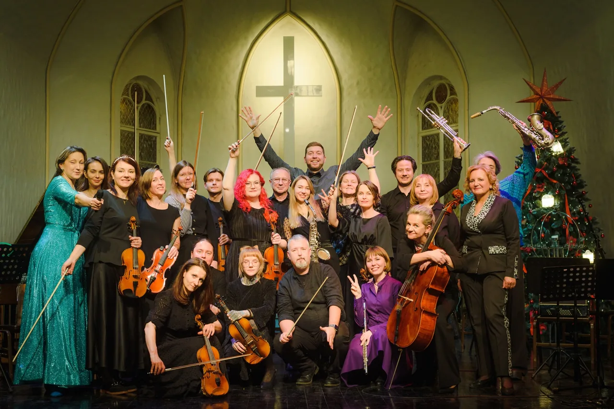

Оркестр гитаристов
Оркестр — это масштаб ансамбля, умноженный на десять: много гитар, большой зал, настоящие концерты. Под моим руководством коллектив готовит серьёзный программный репертуар и выходит на профессиональные площадки.

О коллективе
Оркестр объединяет гитаристов разного возраста и уровня — от уверенных любителей до опытных музыкантов. Мы работаем над крупными произведениями, учимся держать состав и звучать как единый организм.
- Репетиции в Санкт-Петербурге
- Концертный репертуар: классика, современные аранжировки, кроссовер
- Выступления на профессиональных сценах города
Условия участия
Нужен уверенный средний уровень: вы читаете табулатуры или ноты, спокойно играете переборы и боевые рисунки. Уровень участников оркестра выше, чем в ансамбле, — но попасть сюда реально: многие приходят именно через ансамбль.
Аудиция короткая и дружелюбная: сыграете один-два номера, обсудим партии и расписание.
Формат занятий оркестра
- Общие репетиции — по расписанию коллектива
- Работа по партиям: соло, аккомпанемент, бас
- Подготовка к концертным программам сезона
Медиа
Записи концертов и фото со сцен — раздел наполняется.
Хотите играть в оркестре?
Напишите в Telegram: кратко о своём опыте и инструменте — договоримся о короткой аудиции.
Оставить заявку